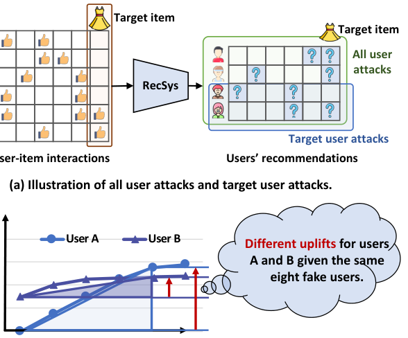

Uplift Modeling for Target User Attacks on Recommender Systems (面向推荐系统目标用户攻击的 Uplift 建模)
- 会议/期刊: WWW 2024 (Oral)
- 作者与机构: Wenjie Wang, Changsheng Wang, Fuli Feng, Wentao Shi, Daizong Ding, Tat-Seng Chua (NUS / USTC / Fudan)
- 推荐链路定位: 召回-排序全链路的安全性（攻击侧建模与评测）
- 研究方向: 去偏公平、可信隐私与工业架构 / 强化学习与动态探索推荐（因果 treatment effect）
- 论文原文: https://arxiv.org/abs/2403.02692v1
- 开源代码: https://github.com/Wcsa23187/UBA
TL;DR (1分钟核心速览)
现有注入攻击向"全体用户"平摊虚假用户预算，忽视物品只对特定受众有吸引力、且不同用户的攻击难度差异极大，导致预算浪费。本文提出目标用户攻击 (target user attacks) 任务，把"给用户 \(u\)分配\(t_u\)个虚假用户"形式化为因果 treatment、把推荐概率增量形式化为 uplift，提出 model-agnostic 的 UBA 框架：用代理模型仿真或三阶交互路径数\(\alpha(\boldsymbol{A}^3_{u,i})^\beta\) 估计逐用户 uplift，再用背包动态规划求最优预算分配。在 ML-1M/Amazon/Yelp 上即插即用于 AIA/AUSH/Leg-UP，受害模型 LightGCN 下 HR@10 相对"Target"平均分配基线提升 30%–86%。
Background & Motivation (背景与核心矛盾)
- 主流范式: 注入攻击（heuristic / gradient-based DADA / neural AIA、AUSH、Leg-UP）通过伪造用户交互矩阵 \(\boldsymbol{D}_f\)提升目标物品\(i\)的曝光，攻击目标\(O(\mathcal{M}_{\theta^*},\mathcal{U}_r,i)\)定义在全体真实用户上，且预算\(|\mathcal{U}_f|\le N\) 在用户间平均或随机分摊。
- 前人局限: ① 物品有独特受众（连衣裙主要吸引女性买家），对全体用户攻击是对无兴趣用户的无效投放；② 攻击难度跨用户高度异质——同一目标用户从 4 个虚假用户增至 5 个可能毫无收益，另一用户则显著跃升（图 1(b)）。DADA 虽意识到难度差异，但仅用 贪心 把预算倾斜给"易攻击"用户，既未量化难度也未做全局最优分配。
- 核心洞察 (Key Insight): 从因果视角看，预算分配是多维 treatment \(T=\{t_u\}_{u\in\mathcal{U}_t}\)，outcome 是 Top-\(K\)命中概率\(Y^{\theta^*}_{u,i}(\boldsymbol{D}_f(T))\)，难度差异本质是异质处理效应 (HTE / uplift)；同时发现用户-物品对在交互图上的三阶路径数与 CF 预测分数近似成正比（Spearman\(r\ge0.998\),\(p\le1.46e^{-59}\)），可直接作为 uplift 的无模型代理。
- 本文切入点: 先估计逐用户 uplift 曲线，再在总预算约束下做一次全局最优分配，最后交回原攻击者生成 \(\boldsymbol{D}_f\)——不改变任何攻击者的生成算子。

Method (核心方法设计)
1. 整体框架 (Overall Architecture)
UBA 是包裹在现有攻击者外层的预算分配器：输入为目标物品 \(i\)、目标用户群\(\mathcal{U}_t\)、真实交互\(\boldsymbol{D}_r\)与总预算\(N\)；核心模块以两条并行路径估计每个目标用户在预算\(t_u\in\{1,\dots,H\}\)下的命中概率\(Y^{\theta^*}_{u,i}(\boldsymbol{D}_f(t_u))\)——路径 A 用代理模型\(S_\phi\)做\(E\approx10\)次仿真回放，路径 B 直接用三阶路径闭式代理；随后以背包 DP 在\(\sum t_u\le N\)约束下求最优\(T^*\)；最后把\(T^*\) 下发给 AIA/AUSH/Leg-UP 等 backend 生成对应数量的虚假用户并注入受害模型训练。
flowchart TD
A["真实交互 D_r + 目标物品 i + 目标用户群 U_t + 预算 N"] --> B["Uplift 估计: 代理模型仿真 或 三阶路径 A^3"]
B --> C["背包动态规划求最优预算分配 T*"]
C --> D["Backend 攻击者 (AIA/AUSH/Leg-UP) 生成 D_f"]
D --> E["注入受害模型 M_θ* → HR/NDCG/MRR"]2. 关键设计拆解 (Key Designs)
-
Uplift 形式化的目标函数：把原"全用户命中率最大化"改成逐用户概率求和并显式约束预算，使难度异质性进入优化目标： \(\max_{T,\boldsymbol{D}_f}\ \sum_{u\in\mathcal{U}_t}Y^{\theta^*}_{u,i}(\boldsymbol{D}_f(T))\ \ \text{s.t.}\ \sum_{u\in\mathcal{U}_t}t_u\le N,\ t_u\in\mathbb{Z}_{\ge0}.\)直觉：只有当边际收益\(\partial Y_{u,i}/\partial t_u\) 在不同用户间差异大时，重分配才有增益——这正是"平摊"次优的根源。
-
三阶路径代理 (免代理模型估计)：若无可信 \(S_\phi\)，用\(\hat{Y}^{\theta^*}_{u,i}(\boldsymbol{D}_f(t_u))=\alpha\cdot\big((\boldsymbol{A}')^3_{u,i}\big)^{\beta}\)近似，其中\(\boldsymbol{A}'\)为拼接真假用户的对称交互矩阵。Proposition 2 给出闭式解释：\((\boldsymbol{A}')^3_{u,i}\)等价于"喜欢\(i\)的中间用户"的加权和，权重为其与\(u\)的共同喜好物品数，故最优伪造策略即是选取\(t_u\)个与\(u\)最相似、且点赞\(i\)的虚假用户。Proposition 1（附录 A.2）通过 BPR/BCE 梯度推导证明\(\mathcal{M}_{\theta^*}(u,i)\propto\boldsymbol{A}^3_{u,i}\)，说明该代理对 MF/NCF/LightGCN 均成立——这是"每加一个虚假用户能带来多少命中概率"的可计算近似。
-
背包 DP 分配与推理开销：把 \(Y\)视为容量\(N\)、每用户可选重量\(0..H\) 的多重背包，递推 \(dp[k][n]=\max_{t\in[0,H]}\{dp[k-1][n-t]+Y[k][t]\},\)复杂度\(O(|\mathcal{U}_t|\cdot N\cdot H)\)，秒级可解。无训练损失（UBA 不改写 backend 的攻击损失，仅是前置分配），负采样/生成策略完全沿用 backend；在线侧额外开销仅是一次 DP + 每条 uplift 曲线的\(H\)次构造，\(H\ll N\)。
Experimental Setup & Evaluation Protocol (实验设置与评估协议)
- 数据集与预处理: 三数据集统一 10-core 过滤，评分 \(>3\) 映射为隐式正反馈 1，其余为 0。
| 数据集 | #Users | #Items | #Interactions | 稀疏度 | 特征/场景说明 |
|---|---|---|---|---|---|
| ML-1M | 5,950 | 3,702 | 567,533 | 0.257% | 电影，含显式评分 |
| Amazon-Game | 3,179 | 5,600 | 38,596 | 0.216% | 游戏，极稀疏 |
| Yelp | 54,632 | 34,474 | 1,334,942 | 0.070% | 本地生活，规模最大最稀疏 |
- 数据划分与防穿越: 攻击类工作不采用 Leave-One-Out 或时间切分，而是以完整交互矩阵训练受害模型（无未来信息可用，因为攻击是"投毒训练集"而非预测未来）；目标物品按人气五分组，分别取最热/最冷组各一件，每设定跑 5 个随机种子取均值。
- 排名评测协议: Full-Ranking（全库 Top-K 未交互排序）；指标 HR@10/20、NDCG@10、MRR@10，统计的是"目标物品是否进入该目标用户的 Top-K 列表"，而非全体用户平均。
- 对比基线与超参: 基线含 Random/Segment/Bandwagon/Average/WGAN、SOTA 梯度攻击 DADA(-DICT/-DIV)、神经攻击 AIA/AUSH/Leg-UP；作者另设 "Target" 基线（把攻击目标从 \(\mathcal{U}_r\)改为\(\mathcal{U}_t\)但预算均摊），用于隔离"选人"与"分配"两种增益。受害模型 MF/NCF/LightGCN，代理模型固定为最简 MF；总预算\(N=100\)，单用户上限\(H\ll N\)，目标用户默认 50 人（另测 100/500）；显著性用\(t\)-test，\(p<0.05\)。
Key Experimental Results (实验关键数据)
1. 主实验对比 (Main Results)
受害模型 LightGCN、预算 \(N=100\)、ML-1M 热门目标物品（NDCG/MRR 均为 @10，"*"为相对 Target 的显著提升）：
| 方法 | HR@10 | NDCG@10 | MRR@10 | Improv. (HR) |
|---|---|---|---|---|
| Before Attack | 0.0000 | 0.0000 | 0.0000 | — |
| Bandwagon | 0.0200 | 0.0035 | 0.0020 | — |
| DADA | 0.0600 | 0.0112 | 0.0123 | — |
| AIA | 0.0200 | 0.0061 | 0.0033 | — |
| AIA + Target (均摊) | 0.2000 | 0.0244 | 0.0222 | — |
| AIA + UBA(w/o \(S_\phi\)) | 0.2400 | 0.0315 | 0.0300 | +20.0% |
| AIA + UBA(w/ \(S_\phi\)) | 0.2600* | 0.0431* | 0.0520* | +30.0% |
| AUSH + Target | 0.2400 | 0.0349 | 0.0340 | — |
| AUSH + UBA(w/ \(S_\phi\)) | 0.3200* | 0.0474* | 0.0533* | +33.3% |
| Leg-UP + Target | 0.1400 | 0.0187 | 0.0200 | — |
| Leg-UP + UBA(w/ \(S_\phi\)) | 0.2600* | 0.0480* | 0.0371* | +85.7% |
| DADA（最强非目标式基线） | 0.0600 | 0.0112 | 0.0123 | — |
Amazon 上同趋势更明显：AUSH + UBA(w/ \(S_\phi\)) 达 HR@10 0.8600（Target 0.6400，+34.4%），AIA 从 0.5800→0.7200（+24.1%），冷门物品上 AUSH 亦从 0.7400→0.8000。
2. 消融实验 (Ablation Study)
ML-1M 热门物品、HR@10，逐层拆解"是否选人 / 是否按 uplift 分配 / 是否有代理模型"：
| Backend | Origin（无攻击） | +Target（选人+均摊） | +UBA(w/o \(S_\phi\))（路径代理） | +UBA(w/\(S_\phi\))（仿真估计） |
|---|---|---|---|---|
| AIA | 0.02 | 0.20 | 0.24 | 0.26 |
| AUSH | 0.02 | 0.24 | 0.28 | 0.32 |
| Leg-UP | 0.04 | 0.14 | 0.18 | 0.26 |
3. 关键实验发现 (Key Findings)
- 增益几乎全部来自"分配"而非"生成"：backend 的 \(\boldsymbol{D}_f\)生成算子完全不变，仅把\(N=100\) 从均摊改为 uplift 引导分配，AUSH 的 HR@10 就从 0.24 升到 0.32、Leg-UP 从 0.14 升到 0.26（+85.7%），说明在固定伪造能力下，预算的边际配置效率才是攻击瓶颈。
- 三阶路径代理以极低成本逼近仿真：w/o \(S_\phi\)版本保留 w/\(S_\phi\)增益的 60%–110%（AUSH 0.28 vs 0.32；Amazon AUSH 0.74 vs 0.86），却省去\(E\approx10\)次代理模型重训；其有效性由 Spearman\(r\ge0.998\)（MF/NCF/LightGCN × BCE/BPR）与三/五/七阶路径均成立的稳健性支撑。
- 预算越小、用户越多，UBA 价值越大：\(N=50\)时相对 Target 的提升幅度最大；目标用户从 50 扩到 500（预算不变）时，AUSH+UBA(w/\(S_\phi\)) 的 HR@10 仍保持 0.38（Target 0.28），单用户预算被摊薄到极小时分配精度更关键。防御侧，FAP 将 Leg-UP+UBA(w/\(S_\phi\)) 的 HR@10 从 0.26 压到 0.06，但仍高于 Target 在同等防御下的 0.04——即强攻击者被削弱后依旧保留残余风险，且 NCF/LightGCN 因更强拟合能力反而比 MF 更易被注入攻击。
Highlights & Limitations (亮点、对比与审稿批判)
- 与代表作对比 (vs. Prior Work): DADA 用贪心把预算倾给"易攻击用户"但无 uplift 量化、无全局最优；AUSH/Leg-UP 直接把目标用户当模板随机采样，等价于均摊。UBA 与之的本质差别是把预算看作可优化的多维 treatment，估计 HTE 后做一次背包最优解，因而能"外挂"在任何 backend 上并叠加增益。
- 可迁移亮点: ① 用三阶交互路径数作为 CF 预测分数的免训练代理，可迁移到冷启动打分、邻居采样剪枝与可解释性归因；② "先估 uplift 曲线、再做资源受限 DP 分配"范式可直接搬到推荐系统的多目标预算调度（如补贴券分配、Push 推送配额）。
- 审稿级局限批判: ① 未建模目标用户之间的相互干扰（\(t_u\)之间本就耦合，作者自己也承认 left for future）；② 仿真法需要为每个候选预算重训代理模型\(\approx10\)次，\(N\)、\(H\)与\(\alpha,\beta\)的敏感度只给了附录，且 DP 的\(O(|\mathcal{U}_t|NH)\) 在万级用户群下会变得吃紧；③ 评测仅覆盖 CF 类受害模型与两个无监督防御（PCA/FAP），未涉及图对比去噪、LLM 推荐等新范式。
Rating (四维评分)
- 方法创新性 (Novelty): ⭐⭐⭐⭐ （首次把注入攻击预算分配写成因果 HTE 问题，并以 \(\boldsymbol{A}^3\) 路径给出可证的代理，但 uplift/背包本身是成熟工具的组合）
- 评估协议与实验扎实度 (Protocol & Experiments): ⭐⭐⭐⭐ （三数据集 × 3 受害模型 × 3 backend × 变化预算/用户数/交互比例/2 种防御，5 seed 平均 + \(t\) 检验，消融链条清晰；未见采样排序协议细节与统计显著性以外的方差报告）
- 写作与数学规范度 (Clarity & Rigor): ⭐⭐⭐⭐ （Proposition 1 的 BPR/BCE 梯度推导与 Proposition 2 的矩阵分解证明完整，符号统一；附录较多依赖经验验证而非严格界）
- 工业落地与复现价值 (Industrial & Practical Value): ⭐⭐⭐⭐ （model-agnostic、代码开源、DP 秒级可解，可直接作为红队工具评估推荐系统抗注入能力；但万级用户群的可扩展性与防御对抗仍需工程验证）